We compared the new, open-source LearnLib to the former closed-source version (a.k.a. JLearn) to assess the performance. We considered the following learning algorithms, which are available in both versions of LearnLib. As JLearn only supports Mealy machine learning, we only consider the Mealy machine versions of these algorithms.
- L*: Angluin’s L* algorithm, adding all prefixes of a counterexample to the table (Mealy version)
- MP: Maler/Pnueli’s algorithm, an L* variant adding all suffixes of a counterexample to the table (Mealy version)
- RS: Rivest/Schapire’s algorithm, a variant of L* adding a single suffix of a counterexample found using binary search to the table (Mealy version)
- DHC: The DHC algorithm, using binary search for counterexample analysis (Mealy version)
- DT: The Discrimination Tree/Observation Pack algorithm, using binary search for counterexample analysis (Mealy version)
Experimental Setup
All experiments were run on an Apple MacBook Pro with a Quad-Core Intel i7 2.5 GHz CPU (x86_64) and 16 GB of RAM, running OS X, version 10.9.5, and Oracle Java 8, version 1.8.0_25-b17.
The publicly available JLearn binary distribution was used, and interfaced with via the Java-based bridge.
Counterexample generation
Counterexamples were generated by comparing the hypothesis to the (known) target system, using the method Automata.findSeparatingWord.
Caching
As membership queries can be answered by simulating them on the target model, a cache would introduce a significant overhead. As we compared the same algorithms, this overhead can furthermore expected to be the same for both LearnLib and JLearn. For this reason, we conducted all experiments without using a cache.
Measurements
For all experiments, only the time spent directly in the learning algorithm was taken into account (excluding, e.g., time needed for counterexample generation).
Performance as a Function of State Count
For these experiments, Mealy automata with binary output alphabet were randomly generated for three different alphabet sizes (2, 10, 100) and approximate state counts between 10 and 1000, using AutomataLib’s random Mealy machine generator. The running time of a single learning process for each algorithm was then recorded for the actual state count of the minimized target automaton. The blue line represents the running times of LearnLib, while the red line represents the running times of JLearn.
Small alphabet (k = 2)
| 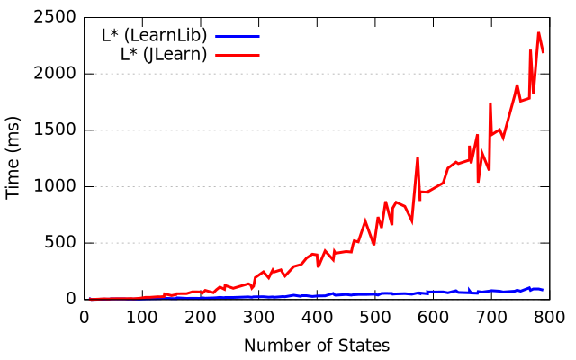 | 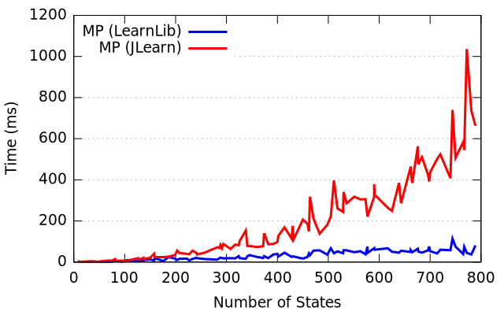 | 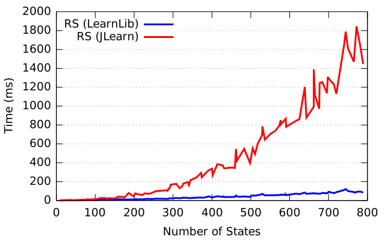 | 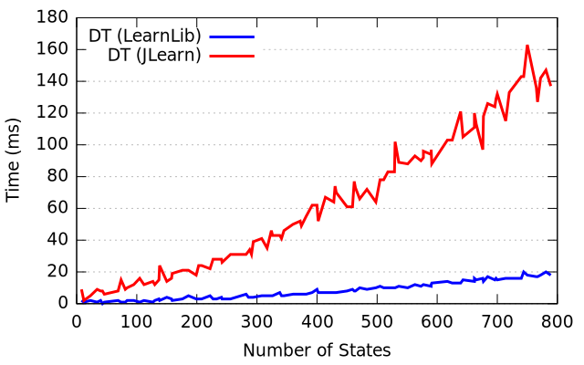 | 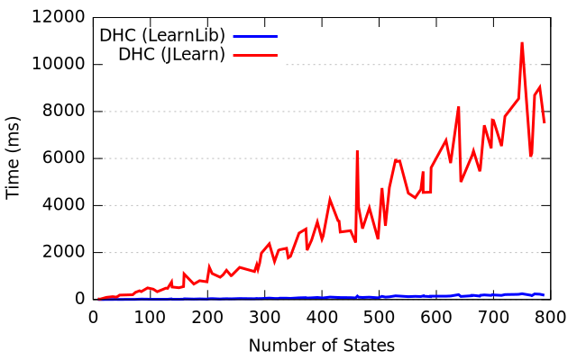 |
| L* | MP | RS | DT | DHC |
{kind=link}
{kind=link}
{kind=link}
{kind=link}
{kind=link}
Medium alphabet (k = 10)

|
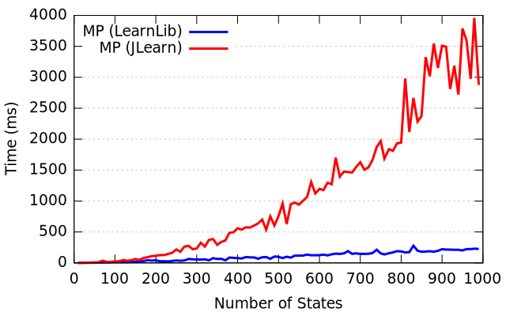 | 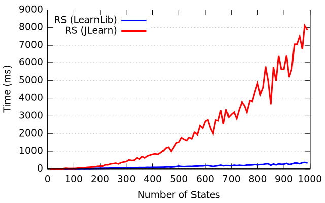 | 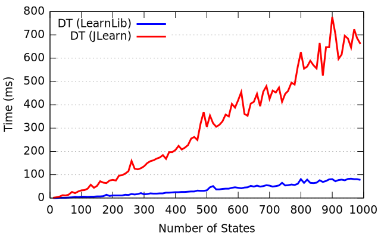 | 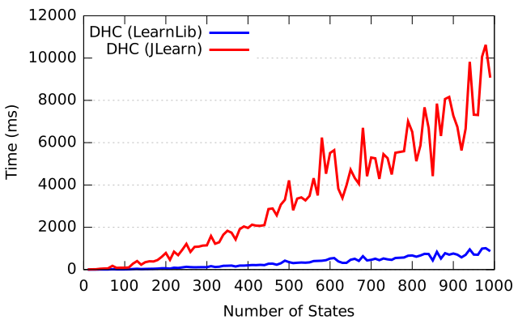 |
| L* | MP | RS | DT | DHC |
{kind=link}
{kind=link}
{kind=link}
{kind=link}
Large alphabet (k = 100)
| 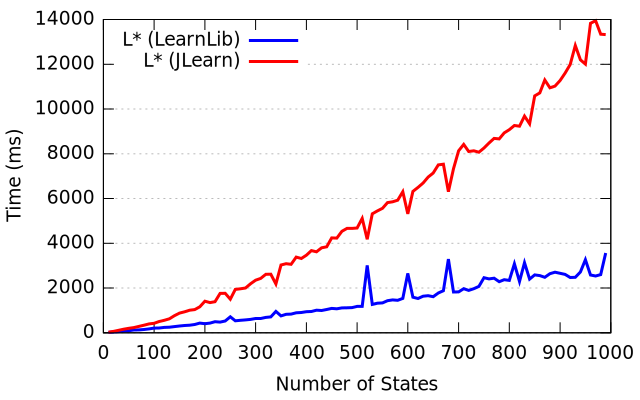 | 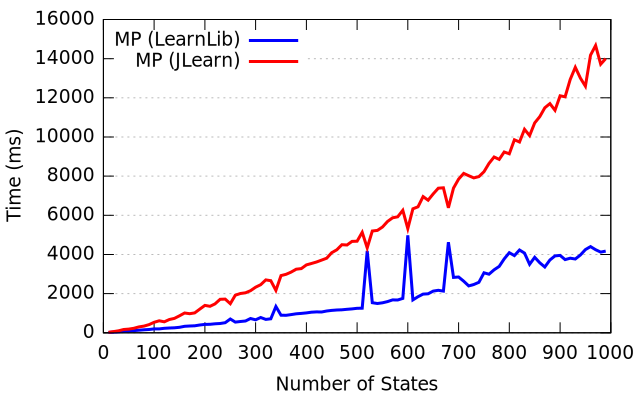 | 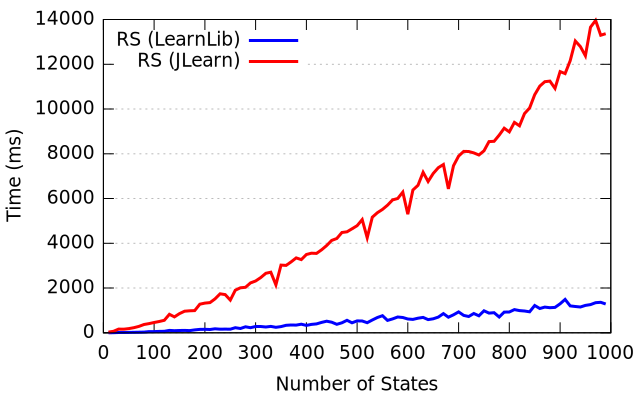 | 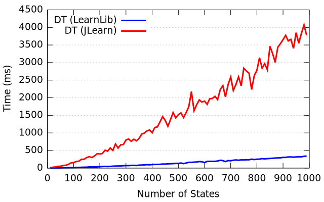 | 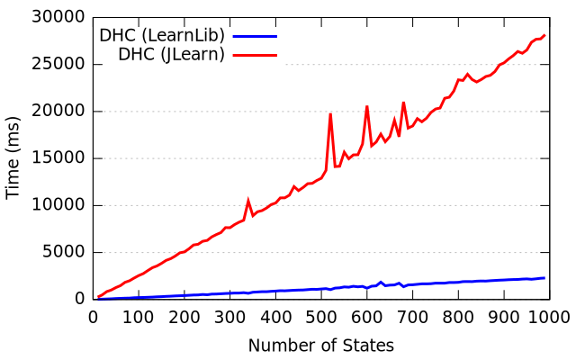 |
| L* | MP | RS | DT | DHC |
{kind=link}
{kind=link}
{kind=link}
{kind=link}
{kind=link}